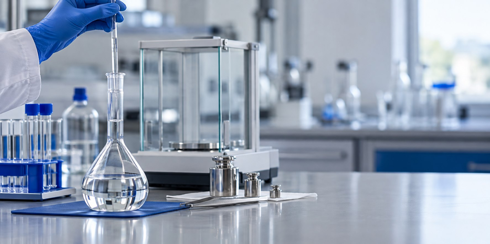

Missão
Fornecer vidrarias e soluções para laboratórios, com qualidade e orientação técnica para a rotina de cada cliente.
A Plena-Lab
Há mais de 30 anos, a Plena-Lab fabrica vidrarias e fornece produtos para laboratórios.
Contamos com fabricação própria de vidrarias para laboratórios, oferecendo uma linha completa de artigos, acessórios e equipamentos laboratoriais.
Mais do que fornecer produtos, buscamos construir parcerias sólidas e duradouras, contribuindo para o desenvolvimento científico, tecnológico e industrial.

Fornecer vidrarias e soluções para laboratórios, com qualidade e orientação técnica para a rotina de cada cliente.
Ser referência em vidrarias laboratoriais e fabricação sob medida, com qualidade reconhecida e atendimento próximo.
Rigor técnico, qualidade dos materiais, clareza no atendimento e respeito aos compromissos assumidos.
Trabalhamos continuamente para oferecer produtos confiáveis, prezando pela qualidade dos materiais, precisão das medições e satisfação dos nossos clientes.
Ver certificados de calibração
Mais do que fornecer produtos, buscamos construir parcerias duradouras, oferecendo soluções para as necessidades de cada cliente.